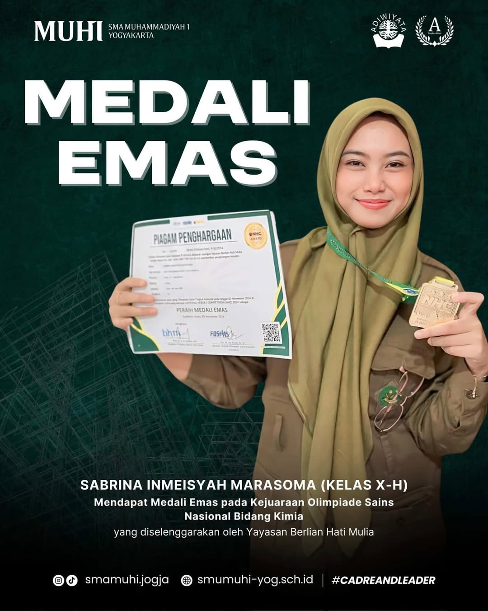

Selamat
Kejuaraan Olimpiade Sains, Dec 5, 2024

Sejarah berdirinya SMA Muhammadiyah 1 Yogyakarta dilatar belakangi adanya desakan dari siswa-siswa SMP Muhammadiyah yang telah lulus ujian negara. Mereka ingin melanjutkan ke jenjang sekolah menengah yang berbasis Islam Muhammadiyah. Atas desakan tersebut guru-guru Muhammadiyah pimpinan H. AG. Dwidjosoeparto beserta R. Muhammad Mukam Hisjam, Ir. Sugiman, Moelono, Muhammad Aslam dan dibantu mahasiswa-mahasiswa UGM mendirikan SMA Muhammadiyah pada Oktober 1948 menempati Sekolah Rakyat VI Muhammadiyah Yogyakarta (sekarang SD Muhammadiyah Ngupasan) di jalan Bhayangkara 5 Yogyakarta. Kegiatan belajar di SR. VI Muhammadiyah jalan Bhayangkara hanya berjalan beberapa bulan. Hal itu disebabkan pada 19 Desember 1948 Belanda melakukan Agresi Militer II kepada ibukota Republik Indonesia kala itu, Yogyakarta. Seperti halnya yang dilakukan anak muda maupun rakyat Indonesia yang lain, guru dan murid SMA Muhammadiyah 1 Yogyakarta ikut perang gerilya melawan agresi militer Belanda tersebut. Setelah Belanda menarik pasukan dari kota Yogyakarta untuk melaksanakan resolusi Dewan Keamanan PBB serta hasil perjanjian Roem-Royen maka ibukota Republik Indonesia dikembalikan lagi ke Yogyakarta pada tanggal 29 Juni 1949. Peristiwa itu dikenal dengan nama peristiwa "Yogya Kembali". Para tentara, gerilyawan kembali masuk kota setelah selesainya perang dan kota Yogyakarta kembali aman. Para siswa kemudian kembali ke bangku sekolah SMA Muhammadiyah yang berlokasi di SR Muhammadiyah IV lagi. Tapi ternyata gedung sekolah tersebut dipakai pemerintah untuk Kantor Kementrian Keuangan RI sampai ibukota kembali ke Jakarta. Oleh karena itu HM. Mawardi yang waktu itu sebagai pengurus Muhammadiyah bidang pengajaran bersama Dwidjosoeparto mencarikan tempat untuk kegiatan belajar mengajar, yaitu dirumah H. Muhammad Sjarbini di Jalan Kauman 44 Yogyakarta. Pada tanggal 5 September 1949 siswa SMAMUHI kembali belajar di jalan Kauman 44 Yogyakarta untuk kemudian tanggal tersebut yang dijadikan hari lahir SMA Muhammadiyah 1 Yogyakarta. Dalam perkembangannya jumlah siswa SMA Muhammadiyah 1 Yogyakarta terus bertambah sehingga tempat belajar di Kauman tidak mampu menampung siswa lagi. Maka kemudian Muhammadiyah menawarkan PKO (Pusat Kesehatan Oemat) di Jl. Notoprajan untuk dijadikan tempat belajar mengajar. Kemudian berturut-turut menempati gedung di Jalan Gendingan sampai tahun 1963, dan selanjutnya menetap di Jalan Kapten Tendean 1B. Sejak 1964 SMA Muhammadiyah 1 Yogyakarta menempati gedung di Jalan. Kapten Piere Tendean 1 B Yogyakarta. Kejadian yang sama terulang kembali. Gedung tersebut tak mampu menampung jumlah siswa yang kembali bertamah. Sehingga perlu tempat baru yang lebih luas untuk kegiatan belajar mengajar, maka SMA Muhammadiyah 1 Yogyakarta kemudian membeli tanah di desa Petinggen, Karangwaru, Tegalrejo Yogyakarta pada masa kepemimpinan Bapak Soegiharso. Pada tahun 1981, Gedung baru di Petinggen telah dibangun 1 unit. Sehingga proses belajar mengajar dilakukan di dua tempat berbeda. Sebagian di kampus baru di desa Petinggen, dan sebagian lainnya menempati kampus lama di JL. Pierre Tendean 1B sampa tahun 1988. Mulai Tahun Ajaran 1988/1989 semua kegiatan belajar- mengajar telah dipindahkan ke kampus baru di Petinggen. Pada tahun 2002, SMA Muhammadiyah 1 Yogyakarta membuka program akselerasi atau program percepatan belajar. Total jumlah yang dibuka adalah 30 kelas. Dengan jumlah peserta didik pertingkatnya sekitar 350 orang. Kemudian pada tahun 2006 SMA Muhammadiyah 1 Yogyakarta kembali membuka program layanan pendidikan baru berbasis Teknologi Informasi dengan nama kelas ICT-MSN (Information Communication Technologi - Model School Network). Program layanan ini disertai dengan kerja sama negera- negara APEC. Kala itu SMA Muhammadiyah 1 Yogyakarta menjalin kerja sama sister school dengan Boonpo Middle School di Korea Selatan. Padat tahun 2008 SMA Muhammadiyah 1 Yogyakarta menjadi salah satu sekolah RSMA-BI (Rintisan Sekolah Menengah Atas-Bertaraf Internasional) di Kota Yogyakarta. Dalam perjalanan menuju Sekolah Bertaraf Internasional, SMA Muhammadiyah 1 Yogyakarta menerapkan pengembangan penggunaan Teknologi Informasi dalam proses belajar mengajar. Bentuk lainnya adalah dengan menerapkan manajemen mutu yang berbasiskan ISO 9001:2008 yang telah resmi disandang SMA Muhammadiyah 1 Yogyakarta
Terwujudnya sekolah unggul yang berlandaskan nilai-nilai keislaman, kebangsaan, dan wawasan lingkungan.
Perpustakaan SMA Muhammadiyah 1 Yogyakarta adalah pusat literasi dan pembelajaran yang dirancang untuk mendukung proses pendidikan, penelitian, dan pengembangan karakter siswa. Perpustakaan ini memiliki koleksi buku yang beragam, mencakup buku pelajaran, literatur umum, referensi akademik, hingga karya sastra. Dengan suasana yang nyaman dan fasilitas modern, perpustakaan ini menjadi tempat ideal bagi siswa untuk belajar dan mengeksplorasi berbagai pengetahuan. Selain koleksi buku cetak, perpustakaan juga menyediakan akses ke sumber daya digital seperti e-book, jurnal, dan artikel ilmiah untuk memenuhi kebutuhan pembelajaran berbasis teknologi. Terdapat ruang baca yang luas, ruang diskusi kelompok, serta area multimedia yang memungkinkan siswa belajar secara interaktif. Perpustakaan SMA Muhammadiyah 1 Yogyakarta juga aktif menyelenggarakan berbagai program seperti pelatihan literasi, lomba membaca, bedah buku, dan diskusi ilmiah. Kegiatan-kegiatan ini bertujuan untuk menumbuhkan budaya membaca dan meningkatkan keterampilan berpikir kritis di kalangan siswa. Dengan semangat pendidikan berbasis nilai-nilai Islam dan kearifan lokal, perpustakaan ini menjadi pilar penting dalam mencetak generasi unggul yang beriman, berilmu, dan berakhlak mulia.